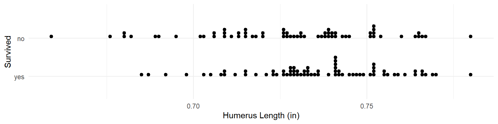
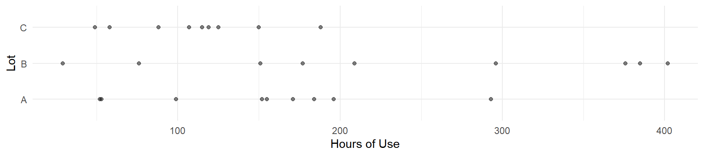
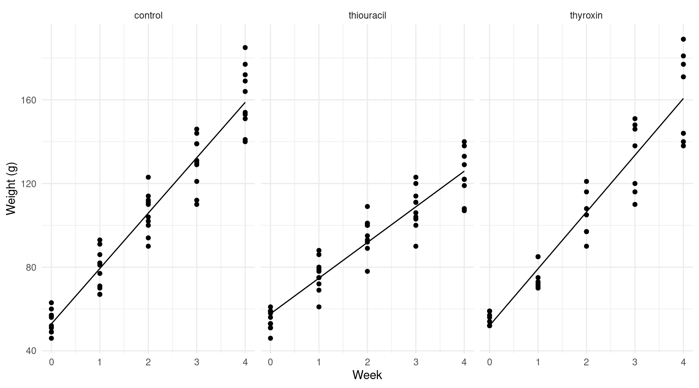
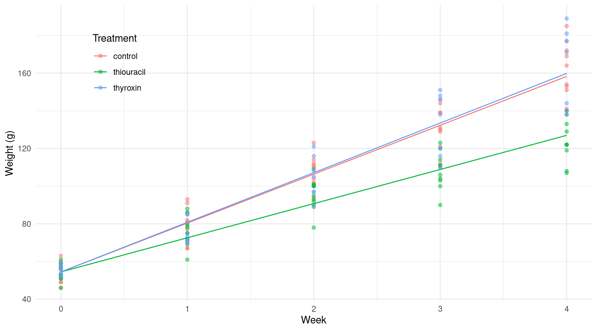
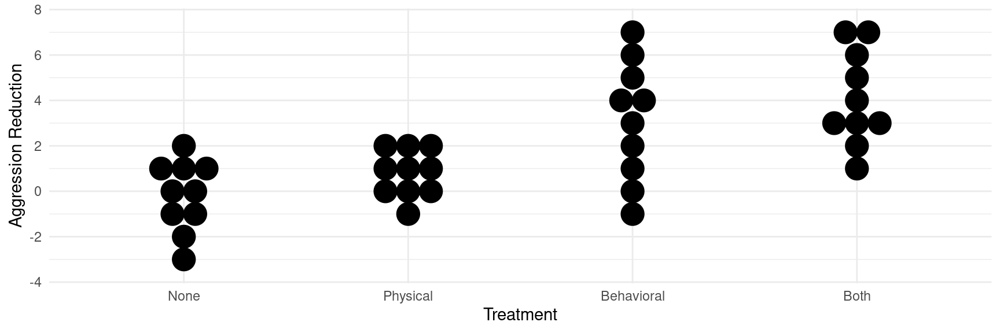

Linear Model Specification and Interpretation
Statistics 516, Homework 1 (Solutions)
You can also download a PDF copy of this homework assignment.
This homework assignment concerns specifying and making inferences from linear models using data from several studies. In particular, you will see how to make inferences concerning linear combinations of model parameters. Note that you will likely need to install several packages to access the data used in these problems.
Dopamine \(\beta\)-Hydroxylase Activity in Schizophrenics After Neuroleptic Treatment
The data frame Dopamine in the package
BSDA is from an observational study of the response of
schizophrenic patients to treatment.1 Schizophrenic patients who had been treated
with a neuroleptic drug were classified as either remaining psychotic or
becoming non-psychotic after the treatment. Samples of cerebrospinal
fluid from all patients in the study were assayed for dopamine \(\beta\)-hydroxylase (DBH) activity. DBH is
an enzyme that catalyzes the conversion of the dopamine to
norepinephrine, both of which are thought to be involved in the
pathology of schizophrenia. There researchers thought that a difference
in DBH activity between the two groups might delineate a subgroup of
patients with a dopamine-sensative condition. You can see the raw data
as follows with the variables dbh (DBH activity) and
group (psychotic or non-psychotic).
library(BSDA)
head(Dopamine) dbh group
1 104 nonpsychotic
2 105 nonpsychotic
3 112 nonpsychotic
4 116 nonpsychotic
5 130 nonpsychotic
6 145 nonpsychotictail(Dopamine) dbh group
20 226 psychotic
21 245 psychotic
22 270 psychotic
23 275 psychotic
24 306 psychotic
25 320 psychoticThe plot below shows the data.2
library(ggplot2)
p <- ggplot(Dopamine, aes(x = group, y = dbh)) +
theme_minimal() + geom_point() + coord_flip() +
labs(x = NULL, y = "DBH (nanomoles/ml-hour per mg of protein)")
plot(p) We can also get some basic summary statistics (mean, standard deviation, and sample size) using the dplyr package.3
library(dplyr)
Dopamine %>% group_by(group) %>%
summarize(meandbh = mean(dbh), sddbh = sd(dbh), n = n())# A tibble: 2 × 4
group meandbh sddbh n
<chr> <dbl> <dbl> <int>
1 nonpsychotic 164. 47.0 15
2 psychotic 243. 51.4 10As can be seen from the descriptive statistics, DBH is a bit lower, on average, for the 15 non-psychotic patients. Here you will use a linear model to make inferences about DBH and how it differs between patients classified as psychotic and non-psychotic.
Estimate a linear model using the
lmfunction with DBH (dbh) as the response variable and patient group (group) as the explanatory variable. Report the parameter estimates and their standard errors using thesummaryfunction.Solution: Here is the estimated model.
m <- lm(dbh ~ group, data = Dopamine) summary(m)$coefficientsEstimate Std. Error t value Pr(>|t|) (Intercept) 164.27 12.59 13.052 4.059e-12 grouppsychotic 78.33 19.90 3.936 6.587e-04The model you estimated in the previous problem can be written as \[ E(Y_i) = \beta_0 + \beta_1 x_i, \] where \(Y_i\) is the \(i\)-th observation of DBH. Explain how the value of \(x_i\) is defined for this model (i.e., how would you determine the value of \(x_i\) for a given patient?). Write the model case-wise to express the expected DBH as a function of \(\beta_0\) and/or \(\beta_1\) for psychotic and non-psychotic patients. Let \(\mu_p\) and \(\mu_n\) be the expected DBH of psychotic and non-psychotic patients, respectively. Using the case-wise representation of the model, write each of these parameters as a function of \(\beta_0\) and/or \(\beta_1\) (i.e., how would you compute \(\mu_p\) and \(\mu_n\) using \(\beta_0\) and \(\beta_1\)?).
Solution: The
grouppsychoticin the output fromsummaryshows that \(x_i\) is an indicator variable defined as \[ x_i = \begin{cases} 1, & \text{if the $i$-th observation is of a psychotic patient}, \\ 0, & \text{otherwise}. \end{cases} \] Thus the model can be written case-wise as \[ E(Y_i) = \begin{cases} \beta_0, & \text{if the $i$-th observation is of a non-psychotic patient}, \\ \beta_0 + \beta_1, & \text{if the $i$-th observation is of a psychotic patient}. \end{cases} \] Thus we have that \(\mu_p = \beta_0 + \beta_1\) and \(\mu_n = \beta_0\).Using the
linconandcontrastfunctions from the trtools package, produce estimates, standard errors, and confidence intervals for \(\mu_p\) and \(\mu_n\). For thelinconfunction, use the fact that each of these parameters can be written as a function of \(\beta_0\) and/or \(\beta_1\). The results fromlinconandcontrastshould be the same.Solution: Here is how to make those inferences using
linconandcontrast.library(trtools) lincon(m, a = c(1,1)) # b0 + b1 (psychotic)estimate se lower upper tvalue df pvalue (1,1),0 242.6 15.41 210.7 274.5 15.74 23 8.32e-14lincon(m, a = c(1,0)) # b0 (non-psychotic)estimate se lower upper tvalue df pvalue (1,0),0 164.3 12.59 138.2 190.3 13.05 23 4.059e-12trtools::contrast(m, a = list(group = c("psychotic","nonpsychotic")), cnames = c("psychotic","non-psychotic"))estimate se lower upper tvalue df pvalue psychotic 242.6 15.41 210.7 274.5 15.74 23 8.320e-14 non-psychotic 164.3 12.59 138.2 190.3 13.05 23 4.059e-12Note that we do not necessarily need to use
linconorcontrastto make inferences about \(\mu_n = \beta_0\) since that is given bysummary.cbind(summary(m)$coefficients, confint(m))Estimate Std. Error t value Pr(>|t|) 2.5 % 97.5 % (Intercept) 164.27 12.59 13.052 4.059e-12 138.23 190.3 grouppsychotic 78.33 19.90 3.936 6.587e-04 37.17 119.5The emmeans package offers some of the same functionality as
linconandcontrast, although the interface is quite different. It is a very powerful package. In these solutions I will show how to use it to make some of the same inferences that are made usinglinconand/orcontrast.library(emmeans) emmeans(m, ~group) # estimate expected response for each groupgroup emmean SE df lower.CL upper.CL nonpsychotic 164 12.6 23 138 190 psychotic 243 15.4 23 211 274 Confidence level used: 0.95Using the
linconandcontrastfunctions, produce an estimate, standard error, and confidence interval for \(\mu_p - \mu_n\), as well as the test statistic and p-value for a test of the null hypothesis that \(\mu_p - \mu_n\) = 0. The results fromlinconandcontrastshould be the same.4Solution: Here is how to make inferences regarding \(\mu_p - \mu_n\) using
linconandcontrast.lincon(m, a = c(0,1))estimate se lower upper tvalue df pvalue (0,1),0 78.33 19.9 37.17 119.5 3.936 23 0.0006587trtools::contrast(m, a = list(group = "psychotic"), b = list(group = "nonpsychotic"))estimate se lower upper tvalue df pvalue 78.33 19.9 37.17 119.5 3.936 23 0.0006587Here is how to estimate this differences using the emmeans package.
pairs(emmeans(m, ~group)) # estimate difference in expected responsecontrast estimate SE df t.ratio p.value nonpsychotic - psychotic -78.3 19.9 23 -3.936 0.0007Note that when using
pairsthe estimated difference is that for \(\mu_n - \mu_p\). To get \(\mu_p - \mu_n\) we can use the optionsreverse = TRUE. Also the functions in emmeans may not necessarily give both a test and a confidence interval for what is being estimated. To force it to provide both we can use the optioninfer = TRUE.pairs(emmeans(m, ~group), reverse = TRUE, infer = TRUE)contrast estimate SE df lower.CL upper.CL t.ratio p.value psychotic - nonpsychotic 78.3 19.9 23 37.2 120 3.936 0.0007 Confidence level used: 0.95There are alternative prameterizations of this model. Estimate a linear model using the
lmfunction with the model formuladbh ~ -1 + group, and repeat what you did in the previous four problems but for this model.5 Note: This problem is extra credit for students enrolled in Stat 436, but is required for students enrolled in Stat 516.Solution: Here is the estimated model.
m <- lm(dbh ~ -1 + group, data = Dopamine) summary(m)$coefficientsEstimate Std. Error t value Pr(>|t|) groupnonpsychotic 164.3 12.59 13.05 4.059e-12 grouppsychotic 242.6 15.41 15.74 8.320e-14This model can be written as \(E(Y_i) = \beta_1x_{i1} + \beta_2x_{i2}\). From the output of
summarywe can see that \(x_{i1}\) and \(x_{i2}\) are indicator variables defined as \[ x_{i1} = \begin{cases} 1, & \text{if the $i$-th observation is of a non-psychotic patient}, \\ 0, & \text{otherwise}, \end{cases} \] and \[ x_{i2} = \begin{cases} 1, & \text{if the $i$-th observation is of a psychotic patient}, \\ 0, & \text{otherwise}. \end{cases} \] So we have that \(\mu_p = \beta_2\) and \(\mu_n = \beta_1\). Here is how we can make inferences for \(\mu_p\) and \(\mu_n\) usinglincon,contrast, and the emmeans package.lincon(m, a = c(0,1))estimate se lower upper tvalue df pvalue (0,1),0 242.6 15.41 210.7 274.5 15.74 23 8.32e-14lincon(m, a = c(1,0))estimate se lower upper tvalue df pvalue (1,0),0 164.3 12.59 138.2 190.3 13.05 23 4.059e-12trtools::contrast(m, a = list(group = c("psychotic","nonpsychotic")), cnames = c("psychotic","nonpsychotic"))estimate se lower upper tvalue df pvalue psychotic 242.6 15.41 210.7 274.5 15.74 23 8.320e-14 nonpsychotic 164.3 12.59 138.2 190.3 13.05 23 4.059e-12# emmeans(m, ~group)Here is how we can make inferences for \(\mu_p - \mu_n\).
lincon(m, a = c(-1,1))estimate se lower upper tvalue df pvalue (-1,1),0 78.33 19.9 37.17 119.5 3.936 23 0.0006587trtools::contrast(m, a = list(group = "psychotic"), b = list(group = "nonpsychotic"))estimate se lower upper tvalue df pvalue 78.33 19.9 37.17 119.5 3.936 23 0.0006587pairs(emmeans(m, ~group), reverse = TRUE, infer = TRUE)contrast estimate SE df lower.CL upper.CL t.ratio p.value psychotic - nonpsychotic 78.3 19.9 23 37.2 120 3.936 0.0007 Confidence level used: 0.95Note that for this parameterization we can get inferences for \(\mu_p = \beta_2\) and \(\mu_n = \beta_1\) from
summaryas well, but not \(\mu_p - \mu_n = \beta_2 - \beta_1\).cbind(summary(m)$coefficients, confint(m))Estimate Std. Error t value Pr(>|t|) 2.5 % 97.5 % groupnonpsychotic 164.3 12.59 13.05 4.059e-12 138.2 190.3 grouppsychotic 242.6 15.41 15.74 8.320e-14 210.7 274.5Perhaps one of the advantages of functions like
contrastand those from the emmeans package is that we do not usually need to be concerned with how the model is parameterized.
Weight Gain in Rats Exposed to Thiouracil and Thyroxin
The data frame rat in the package ALA
is from an experiment investigating the effects of thiouracil and
thyroxin on growth of rats.6 The ALA package is located
in the R-Forge repository and not the CRAN repository, which is the
default repository used by install.packages, so use the
command
install.packages("ALA", repos = "http://R-Forge.R-project.org")
to specify the correct repository for installing ALA
package. In this experiment thirty rats were each randomly assigned to
one of three treatment groups where for two of the three groups an
additive (thiouracil or thyroxin) was put in the drinking water.7
Measurements of rat weight (in grams) were observed at a baseline of
zero weeks before putting the additives in the drinking water, and again
at one, two, three, and four weeks after the additives were introduced.
Three of the rats from the thyroxin group were lost so the total number
of rats from which we have data is 27.8 The following shows
first few rows of the rat data frame.
library(ALA)
head(rat) id treatment week weight
1 1 control 0 57
28 1 control 1 86
55 1 control 2 114
82 1 control 3 139
109 1 control 4 172
2 2 control 0 60Note that the row names are not consecutive integers. This is likely
because the data were originally sorted by treatment and week before
being sorted by rat and then stored in the data frame. The row names
usually do not have any effect on what we are doing here, but if you
wanted to “reset” them you could use
rownames(rat) <- NULL. The data can be plotted as
follows.
library(ggplot2)
p <- ggplot(rat, aes(x = week, y = weight)) + theme_minimal() +
geom_point() + facet_wrap(~ treatment) + labs(y = "Weight (g)", x = "Week")
plot(p) These data are longitudinal in that multiple observations are made on the same rat over time. Special methods are necessary to provide proper inferences for such designs, and we will discuss these later in the semester. But for now we will ignore this issue. You might pretend that each rat was only observed once (i.e., the rats in a given treatment group observed at one week are different from those observed at another week).
Estimate a linear model using the
lmfunction withweightas your response variable, andweekandtreatmentas your explanatory variables, respectively. The model should be specified with an “interaction” betweentreatmentandweekso that the rate of change in expected weight per week can be different across the treatment groups. Report the parameter estimates using thesummaryfunction. You should get something like the following.Estimate Std. Error t value Pr(>|t|) (Intercept) 52.8800 2.648 19.9694 2.758e-41 treatmentthiouracil 4.8200 3.745 1.2871 2.004e-01 treatmentthyroxin -0.7943 4.127 -0.1925 8.477e-01 week 26.4800 1.081 24.4944 2.373e-50 treatmentthiouracil:week -9.4300 1.529 -6.1680 8.257e-09 treatmentthyroxin:week 0.6629 1.685 0.3935 6.946e-01Solution: The model can be estimated as follows.
m <- lm(weight ~ treatment + week + treatment:week, data = rat) summary(m)$coefficientsEstimate Std. Error t value Pr(>|t|) (Intercept) 52.8800 2.648 19.9694 2.758e-41 treatmentthiouracil 4.8200 3.745 1.2871 2.004e-01 treatmentthyroxin -0.7943 4.127 -0.1925 8.477e-01 week 26.4800 1.081 24.4944 2.373e-50 treatmentthiouracil:week -9.4300 1.529 -6.1680 8.257e-09 treatmentthyroxin:week 0.6629 1.685 0.3935 6.946e-01As can be seen from the output of
summaryfrom the previous problem, the model has six terms, including \(\beta_0\), so it can be written as \[ E(Y_i) = \beta_0 + \beta_1 x_{i1} + \beta_2 x_{i2} + \beta_3 x_{i3} + \beta_4 x_{i4} + \beta_5 x_{i5}, \] where \(Y_i\) is the \(i\)-th observation of weight (in grams), and \(x_{i1}, x_{i2}, \dots, x_{i5}\) depend on treatment and/or week. Explain how \(x_{i1}\), \(x_{i2}\), \(x_{i3}\), \(x_{i4}\), and \(x_{i5}\) are defined for this model (i.e., how would you determine their values for a given observation?). Then write the model case-wise to show how the expected weight depends on week for each of the three treatment conditions.Solution: From
summarywe can see that \(x_{i1}\) and \(x_{i2}\) are both indicator variables defined as \[ x_{i1} = \begin{cases} 1, & \text{if the treatment used for the $i$-th observation is thiouracil}, \\ 0, & \text{otherwise}, \end{cases} \] and \[ x_{i2} = \begin{cases} 1, & \text{if the treatment used for the $i$-th observation is thyroxin}, \\ 0, & \text{otherwise}. \end{cases} \] Then \(x_{i3}\) is the week (0, 1, 2, 3, or 4), and \(x_{i4} = x_{i1}x_{i3}\) and \(x_{i5} = x_{i2}x_{i3}\). This implies that we could also write \(x_{i4}\) and \(x_{i5}\) as \[ x_{i4} = \begin{cases} w_i, & \text{if the treatment used for the $i$-th observation is thiouracil}, \\ 0, & \text{otherwise}, \end{cases} \] and \[ x_{i5} = \begin{cases} w_i, & \text{if the treatment used for the $i$-th observation is thyroxin}, \\ 0, & \text{otherwise}, \end{cases} \] where \(w_i = x_{i3}\) (i.e., week for the \(i\)-th observation). We can therefore write the model case-wise as \[ E(Y_i) = \begin{cases} \beta_0 + \beta_3 w_i, & \text{if the treatment for the $i$-th observation is control}, \\ \beta_0 + \beta_1 + (\beta_3 + \beta_4) w_i, & \text{if the treatment for the $i$-th observation is thiouracil}, \\ \beta_0 + \beta_2 + (\beta_3 + \beta_5) w_i, & \text{if the treatment for the $i$-th observation is thyroxin}, \\ \end{cases} \] where \(w_i = x_{i3}\) is the week for the \(i\)-th observation. Note that if you entered the terms in the model formula in a different order (e.g.,weekbeforetreatmentthis would change the parameterization of the model).Plot the model by creating an artificial data set of combinations of values of week and treatment using the
expand.gridfunction, computing the predicted values from the model using thepredictfunction, and adding lines to the plot using the code above andgeom_line.Solution: Here is our artifical data set.
d <- expand.grid(week = seq(0, 4, length = 100), treatment = c("control","thiouracil","thyroxin")) head(d)week treatment 1 0.00000 control 2 0.04040 control 3 0.08081 control 4 0.12121 control 5 0.16162 control 6 0.20202 controlThere are a couple of things to note here. One is that we really only need two points for a line. So you could have
week = c(0,4). But we will want to have more points in the future when we are plotting curves and not lines. A shortcut you could use to specify the levels of treatment istreatment = unique(rat$treatment)which will give you the unique values oftreatment. Now we can add the predicted valus using thepredictfunction, which effectively computes the estimated expected response for every combination oftreatmentandweek.d$yhat <- predict(m, newdata = d) head(d)week treatment yhat 1 0.00000 control 52.88 2 0.04040 control 53.95 3 0.08081 control 55.02 4 0.12121 control 56.09 5 0.16162 control 57.16 6 0.20202 control 58.23Now we can create the plot. Here is the complete code for the plot with the data and the estimated model.
p <- ggplot(rat, aes(x = week, y = weight)) + theme_minimal() + geom_point() + facet_wrap(~ treatment) + labs(y = "Weight (g)", x = "Week") + geom_line(aes(y = yhat), data = d) plot(p)
Using the
contrastfunction, estimate the expected weight at zero weeks and again at four weeks for rats in each of the three treatment conditions.Solution: Here are the estimated weights at zero weeks.
trtools::contrast(m, a = list(treatment = c("control","thiouracil","thyroxin"), week = 0), cnames = c("control","thiouracil","thyroxin"))estimate se lower upper tvalue df pvalue control 52.88 2.648 47.64 58.12 19.97 129 2.758e-41 thiouracil 57.70 2.648 52.46 62.94 21.79 129 4.604e-45 thyroxin 52.09 3.165 45.82 58.35 16.46 129 1.744e-33trtools::contrast(m, a = list(treatment = c("control","thiouracil","thyroxin"), week = 4), cnames = c("control","thiouracil","thyroxin"))estimate se lower upper tvalue df pvalue control 158.8 2.648 153.6 164.0 59.97 129 4.436e-96 thiouracil 125.9 2.648 120.7 131.1 47.54 129 1.231e-83 thyroxin 160.7 3.165 154.4 166.9 50.76 129 4.059e-87Here is how you would do that using the emmeans package.
emmeans(m, ~treatment, at = list(week = 0))treatment emmean SE df lower.CL upper.CL control 52.9 2.65 129 47.6 58.1 thiouracil 57.7 2.65 129 52.5 62.9 thyroxin 52.1 3.17 129 45.8 58.4 Confidence level used: 0.95emmeans(m, ~treatment, at = list(week = 4))treatment emmean SE df lower.CL upper.CL control 159 2.65 129 154 164 thiouracil 126 2.65 129 121 131 thyroxin 161 3.17 129 154 167 Confidence level used: 0.95You can also do this in one statement as follows.
emmeans(m, ~treatment|week, at = list(week = c(0,4)))week = 0: treatment emmean SE df lower.CL upper.CL control 52.9 2.65 129 47.6 58.1 thiouracil 57.7 2.65 129 52.5 62.9 thyroxin 52.1 3.17 129 45.8 58.4 week = 4: treatment emmean SE df lower.CL upper.CL control 158.8 2.65 129 153.6 164.0 thiouracil 125.9 2.65 129 120.7 131.1 thyroxin 160.7 3.17 129 154.4 166.9 Confidence level used: 0.95Using the
contrastfunction, estimate the difference in expected weight at four weeks between the control group and the other two treatment groups, and also between the thiouracil and thyroxin groups. Also estimate these differences at zero weeks.Solution: Here is the comparison between the the groups at four weeks.
trtools::contrast(m, a = list(treatment = c("thiouracil","thyroxin"), week = 4), b = list(treatment = "control", week = 4), cnames = c("thiouracil vs control","thyroxin vs control"))estimate se lower upper tvalue df pvalue thiouracil vs control -32.900 3.745 -40.309 -25.49 -8.785 129 8.276e-15 thyroxin vs control 1.857 4.127 -6.308 10.02 0.450 129 6.534e-01trtools::contrast(m, a = list(treatment = "thyroxin", week = 4), b = list(treatment = "thiouracil", week = 4))estimate se lower upper tvalue df pvalue 34.76 4.127 26.59 42.92 8.423 129 6.168e-14And here are the comparisons at zero weeks.
trtools::contrast(m, a = list(treatment = c("thiouracil","thyroxin"), week = 0), b = list(treatment = "control", week = 0), cnames = c("thiouracil vs control","thyroxin vs control"))estimate se lower upper tvalue df pvalue thiouracil vs control 4.8200 3.745 -2.589 12.23 1.2871 129 0.2004 thyroxin vs control -0.7943 4.127 -8.959 7.37 -0.1925 129 0.8477trtools::contrast(m, a = list(treatment = "thyroxin", week = 0), b = list(treatment = "thiouracil", week = 0))estimate se lower upper tvalue df pvalue -5.614 4.127 -13.78 2.55 -1.36 129 0.176Using the
contrastfunction, estimate the rate of change in expected weight per unit increase in week (i.e., the change in expected weight corresponding to a one week increase in time) for rats in each of the three treatment groups.Solution: Here is how we can estimate the rates of change in expected weight per week.
trtools::contrast(m, a = list(week = 1, treatment = c("control","thiouracil","thyroxin")), b = list(week = 0, treatment = c("control","thiouracil","thyroxin")), cnames = c("control","thiouracil","thyroxin"))estimate se lower upper tvalue df pvalue control 26.48 1.081 24.34 28.62 24.49 129 2.373e-50 thiouracil 17.05 1.081 14.91 19.19 15.77 129 6.900e-32 thyroxin 27.14 1.292 24.59 29.70 21.01 129 1.846e-43We can estimate these quantities with the emmeans package a couple of ways. One is to use the
emtrendsfunction.emtrends(m, ~treatment, var = "week", infer = TRUE)treatment week.trend SE df lower.CL upper.CL t.ratio p.value control 26.5 1.08 129 24.3 28.6 24.494 <.0001 thiouracil 17.1 1.08 129 14.9 19.2 15.772 <.0001 thyroxin 27.1 1.29 129 24.6 29.7 21.007 <.0001 Confidence level used: 0.95Another is to use the
pairsfunction but use thebyargument so that the pairs are within each level oftreatment.pairs(emmeans(m, ~treatment*week, at = list(week = c(0,1))), by = "treatment", reverse = TRUE, infer = TRUE)treatment = control: contrast estimate SE df lower.CL upper.CL t.ratio p.value week1 - week0 26.5 1.08 129 24.3 28.6 24.494 <.0001 treatment = thiouracil: contrast estimate SE df lower.CL upper.CL t.ratio p.value week1 - week0 17.1 1.08 129 14.9 19.2 15.772 <.0001 treatment = thyroxin: contrast estimate SE df lower.CL upper.CL t.ratio p.value week1 - week0 27.1 1.29 129 24.6 29.7 21.007 <.0001 Confidence level used: 0.95Note that here the
emmeanspart creates estimates of the expected response at weeks 0 and 1 for each treatment.emmeans(m, ~treatment*week, at = list(week = c(0,4)))treatment week emmean SE df lower.CL upper.CL control 0 52.9 2.65 129 47.6 58.1 thiouracil 0 57.7 2.65 129 52.5 62.9 thyroxin 0 52.1 3.17 129 45.8 58.4 control 4 158.8 2.65 129 153.6 164.0 thiouracil 4 125.9 2.65 129 120.7 131.1 thyroxin 4 160.7 3.17 129 154.4 166.9 Confidence level used: 0.95Putting that “inside” the
pairsfunction then generates inferences for the difference between pairs of conditions, and thebyargument forces those to be within each level oftreatment. This is perhaps more complicated than is necessary, but an advantage of this approach is that we could do the same thing for something other than an increase of one week. For example, we can estimate the increase in expected weight after four weeks for each treatment condition.pairs(emmeans(m, ~treatment*week, at = list(week = c(0,4))), by = "treatment", reverse = TRUE, infer = TRUE)treatment = control: contrast estimate SE df lower.CL upper.CL t.ratio p.value week4 - week0 105.9 4.32 129 97.4 114.5 24.494 <.0001 treatment = thiouracil: contrast estimate SE df lower.CL upper.CL t.ratio p.value week4 - week0 68.2 4.32 129 59.6 76.8 15.772 <.0001 treatment = thyroxin: contrast estimate SE df lower.CL upper.CL t.ratio p.value week4 - week0 108.6 5.17 129 98.3 118.8 21.007 <.0001 Confidence level used: 0.95We could even go one step further and compare the rates of change among the three treatment conditions.
pairs(pairs(emmeans(m, ~treatment*week, at = list(week = c(0,4))), by = "treatment", reverse = TRUE), by = NULL)contrast estimate SE df t.ratio p.value (week4 - week0 control) - (week4 - week0 thiouracil) 37.72 6.12 129 6.168 <.0001 (week4 - week0 control) - (week4 - week0 thyroxin) -2.65 6.74 129 -0.393 0.9183 (week4 - week0 thiouracil) - (week4 - week0 thyroxin) -40.37 6.74 129 -5.991 <.0001 P value adjustment: tukey method for comparing a family of 3 estimatesHere the
by = NULLargument is necessary because they “inner” use ofpairsgrouped the comparison bytreatment, but now we want to make comparisons across treatment conditions. Note thatpairsautomatically applied an adjustment for the family-wise error rate here. This can be removed by adding the optionadjust = "none".pairs(pairs(emmeans(m, ~treatment*week, at = list(week = c(0,4))), by = "treatment", reverse = TRUE), by = NULL, adjust = "none")contrast estimate SE df t.ratio p.value (week4 - week0 control) - (week4 - week0 thiouracil) 37.72 6.12 129 6.168 <.0001 (week4 - week0 control) - (week4 - week0 thyroxin) -2.65 6.74 129 -0.393 0.6946 (week4 - week0 thiouracil) - (week4 - week0 thyroxin) -40.37 6.74 129 -5.991 <.0001The emmeans package is quite powerful, but it there is a bit of a learning curve. You can estimate differences of differences like this with with the
contrastfunction from trtools as well by using two additional arguments. Here is how to estimate the difference in the increase in the expected weight from week 0 to week 4 between the control and thiouracil conditions.trtools::contrast(m, a = list(treatment = "control", week = 4), b = list(treatment = "control", week = 0), u = list(treatment = "thiouracil", week = 4), v = list(treatment = "thiouracil", week = 0))estimate se lower upper tvalue df pvalue 37.72 6.115 25.62 49.82 6.168 129 8.257e-09Here the
contrastfunction considers the difference in the expected response between the conditions specifiedaandb, and also betweenuandv, and then makes inferences for the difference between those differences!Now consider a model for these data but using the model formula
weight ~ treatment:weekwith thelmfunction.9 Repeat what you did in the previous problems but using now this model. Note: This problem is extra credit for students enrolled in Stat 436, but is required for students enrolled in Stat 516.Solution: Here is the estimated model.
m <- lm(weight ~ treatment:week, data = rat) summary(m)$coefficientsEstimate Std. Error t value Pr(>|t|) (Intercept) 54.46 1.6141 33.74 1.829e-66 treatmentcontrol:week 25.95 0.8248 31.47 6.268e-63 treatmentthiouracil:week 18.13 0.8248 21.98 8.733e-46 treatmentthyroxin:week 26.35 0.9207 28.62 3.247e-58The model can be written as \(E(Y_i) = \beta_0 + \beta_1x_{i1} + \beta_2x_{i2} + \beta_3x_{i3}\). We can explain \(x_{i1}\), \(x_{i2}\), and \(x_{i3}\) in a couple of ways. If we were to define three new variables called \(d_{i1}\), \(d_{i2}\), and \(d_{i3}\) such that \[ d_{i1} = \begin{cases} 1, & \text{if the treatment for the $i$-th observation is control}, \\ 0, & \text{otherwise}, \end{cases} \] \[ d_{i2} = \begin{cases} 1, & \text{if the treatment for the $i$-th observation is thiouracil}, \\ 0, & \text{otherwise}, \end{cases} \] \[ d_{i3} = \begin{cases} 1, & \text{if the treatment for the $i$-th observation is thyroxin}, \\ 0, & \text{otherwise}, \end{cases} \] then we can say that \(x_{i1} = d_{i1}w_i\), \(x_{i2} = d_{i2}w_i\), and \(x_{i3} = d_{i3}w_i\), where \(w_i\) is the week for the \(i\)-th observation. We can also define these variables without explicitly referencing indicator variables as \[ x_{i1} = \begin{cases} w_i, & \text{if the treatment for the $i$-th observation is control}, \\ 0, & \text{otherwise}, \end{cases} \] \[ x_{i2} = \begin{cases} w_i, & \text{if the treatment for the $i$-th observation is thiouracil}, \\ 0, & \text{otherwise}, \end{cases} \] \[ x_{i3} = \begin{cases} w_i, & \text{if the treatment for the $i$-th observation is thyroxin}, \\ 0, & \text{otherwise}. \end{cases} \] We can write the model case-wise as \[ E(Y_i) = \begin{cases} \beta_0 + \beta_1w_i, & \text{if the treatment for the $i$-th observation is control}, \\ \beta_0 + \beta_2w_i, & \text{if the treatment for the $i$-th observation is thiouracil}, \\ \beta_0 + \beta_3w_i, & \text{if the treatment for the $i$-th observation is thyroxin}. \\ \end{cases} \] For everything else we can just cut-and-paste the code from before, but apply it to this alternative model. Here is the plot.
d <- expand.grid(week = seq(0, 4, length = 100), treatment = c("control","thiouracil","thyroxin")) d$yhat <- predict(m, newdata = d) p <- ggplot(rat, aes(x = week, y = weight)) + theme_minimal() + geom_point() + facet_wrap(~ treatment) + labs(y = "Weight (g)", x = "Week") + geom_line(aes(y = yhat), data = d) plot(p)Notice how the three lines have the same intercept (i.e., the same estimated expected weight at zero weeks). I can make this a bit more obvious by putting the three treatment conditions in the same plot.
p <- ggplot(rat, aes(x = week, y = weight, color = treatment)) + theme_minimal() + geom_point(alpha = 0.5) + labs(y = "Weight (g)", x = "Week", color = "Treatment") + geom_line(aes(y = yhat), data = d) + theme(legend.position = c(0.15, 0.8)) plot(p) Here are the estimated weights at zero weeks.
trtools::contrast(m, a = list(treatment = c("control","thiouracil","thyroxin"), week = 0), cnames = c("control","thiouracil","thyroxin"))estimate se lower upper tvalue df pvalue control 54.46 1.614 51.27 57.65 33.74 131 1.829e-66 thiouracil 54.46 1.614 51.27 57.65 33.74 131 1.829e-66 thyroxin 54.46 1.614 51.27 57.65 33.74 131 1.829e-66trtools::contrast(m, a = list(treatment = c("control","thiouracil","thyroxin"), week = 4), cnames = c("control","thiouracil","thyroxin"))estimate se lower upper tvalue df pvalue control 158.3 2.558 153.2 163.3 61.88 131 7.619e-99 thiouracil 127.0 2.558 121.9 132.0 49.64 131 7.990e-87 thyroxin 159.9 3.037 153.9 165.9 52.64 131 5.297e-90Here is the comparison between the the groups at four weeks.
trtools::contrast(m, a = list(treatment = c("thiouracil","thyroxin"), week = 4), b = list(treatment = "control", week = 4), cnames = c("thiouracil vs control","thyroxin vs control"))estimate se lower upper tvalue df pvalue thiouracil vs control -31.293 3.536 -38.289 -24.298 -8.8491 131 5.256e-15 thyroxin vs control 1.592 3.897 -6.117 9.301 0.4086 131 6.835e-01trtools::contrast(m, a = list(treatment = "thyroxin", week = 4), b = list(treatment = "thiouracil", week = 4))estimate se lower upper tvalue df pvalue 32.89 3.897 25.18 40.59 8.439 131 5.169e-14And here are the comparisons at zero weeks.
trtools::contrast(m, a = list(treatment = c("thiouracil","thyroxin"), week = 0), b = list(treatment = "control", week = 0), cnames = c("thiouracil vs control","thyroxin vs control"))estimate se lower upper tvalue df pvalue thiouracil vs control 0 0 0 0 NaN 131 NaN thyroxin vs control 0 0 0 0 NaN 131 NaNtrtools::contrast(m, a = list(treatment = "thyroxin", week = 0), b = list(treatment = "thiouracil", week = 0))estimate se lower upper tvalue df pvalue 0 0 0 0 NaN 131 NaNHere are the estimated rates of change in expected weight per week.
trtools::contrast(m, a = list(week = 1, treatment = c("control","thiouracil","thyroxin")), b = list(week = 0, treatment = c("control","thiouracil","thyroxin")), cnames = c("control","thiouracil","thyroxin"))estimate se lower upper tvalue df pvalue control 25.95 0.8248 24.32 27.59 31.47 131 6.268e-63 thiouracil 18.13 0.8248 16.50 19.76 21.98 131 8.733e-46 thyroxin 26.35 0.9207 24.53 28.17 28.62 131 3.247e-58Note that with this parameterization these rates of change are \(\beta_1\), \(\beta_2\), and \(\beta_3\), and so inferences are given by
summaryas well.
Otter Survey
The data frame otters in the package
SDaA is from a survey of dens (holts) of Eurasian
otters (Lutra lutra) along the coast of Shetland in the United
Kingdom.10 The observational units here are 110 m
deep by 5 km long sections along the coast. These sections were selected
using a stratified random sampling design where simple random sampling
was applied to the sections in each of four strata defined by the
habitat: cliff, agricultural, peat, and non-peat. The number of holts
was counted for the sections that were sampled. Here are the first few
observations of that data.
library(SDaA)
head(otters) section habitat holts
1 1 4 6
2 3 2 0
3 4 1 8
4 8 1 0
5 11 1 0
6 19 2 0The four strata (habitat) are just coded with integers.
This is problematic for two reasons. One is that if we were to use this
variable as an explanatory variable it would be specified as being
quantitative and not categorical, which would not make sense. We can fix
this by converting it to a factor, but it we are going to do that we
might as well give the levels more descriptive labels. The code below
creates a new variable stratum which does this.
library(dplyr)
otters <- otters %>%
mutate(stratum = factor(habitat, levels = 1:4,
labels = c("cliff","agricultural","peat","non-peat")))
head(otters) section habitat holts stratum
1 1 4 6 non-peat
2 3 2 0 agricultural
3 4 1 8 cliff
4 8 1 0 cliff
5 11 1 0 cliff
6 19 2 0 agriculturalIn what follows we will use the variable stratum instead
of habitat. Here is a dot plot of the data.11
library(ggplot2)
p <- ggplot(otters, aes(x = stratum, y = holts)) + theme_classic() +
geom_dotplot(binaxis = "y", binwidth = 1, stackdir = "center") +
labs(x = "Stratum", y = "Number of Holts")
plot(p) Here are some basic descriptive statistics for the number of holts per
section by stratum (mean, standard deviation, and sample size).
Here are some basic descriptive statistics for the number of holts per
section by stratum (mean, standard deviation, and sample size).
library(dplyr)
otters %>% group_by(stratum) %>%
summarize(meanholts = mean(holts), sdholts = sd(holts), n = n())# A tibble: 4 × 4
stratum meanholts sdholts n
<fct> <dbl> <dbl> <int>
1 cliff 1.74 2.33 19
2 agricultural 1.75 2.61 20
3 peat 13.3 7.67 22
4 non-peat 4.10 3.95 21Notice how the strata with more holts per section, on average, have higher variance. This is common for counts, and it is a problem for proper inferences since our inferences will assume that the variability of the response variable is (relatively) constant. We will discuss how to deal with this problem later, but ignore it here for the purpose of this assignment. Here you will use a linear model to make inferences about the abundance of otter dens.12
Estimate a linear model using the
lmfunction withholtsas the response variable andstratumas the explanatory variable. Report the parameter estimates usingsummaryfunction. Note that the model can be written as \(E(Y_i) = \beta_0 + \beta_1x_{i1} + \beta_2x_{i2} + \beta_3x_{i3}\). Explain briefly what \(x_{i1}\), \(x_{i2}\), and \(x_{i3}\) each represent (i.e., how would you determine the their values for a given section?). Write the model case-wise to show how the expected number of holts of a sampled section can be written as a function of \(\beta_0\), \(\beta_1\), \(\beta_2\), and/or \(\beta_3\). Finally, let \(\mu_c\), \(\mu_a\), \(\mu_p\), and \(\mu_n\) denote the expected number of holts in a section from the cliff, agricultural, peat, and non-peat habitats, respectively. Write each of these as a function of \(\beta_0\), \(\beta_1\), \(\beta_2\), and/or \(\beta_3\).Solution: We can estimate the model as follows.
m <- lm(holts ~ stratum, data = otters) summary(m)$coefficientsEstimate Std. Error t value Pr(>|t|) (Intercept) 1.73684 1.094 1.587653 1.164e-01 stratumagricultural 0.01316 1.528 0.008613 9.931e-01 stratumpeat 11.53589 1.493 7.724417 3.211e-11 stratumnon-peat 2.35840 1.510 1.562039 1.223e-01This shows that \(x_{i1}\), \(x_{i2}\), and \(x_{i3}\) are defined as \[ x_{i1} = \begin{cases} 1, & \text{if the $i$-th observation is from the agricultural stratum}, \\ 0, & \text{otherwise}, \end{cases} \] \[ x_{i2} = \begin{cases} 1, & \text{if the $i$-th observation is from the peat stratum}, \\ 0, & \text{otherwise}, \end{cases} \] \[ x_{i3} = \begin{cases} 1, & \text{if the $i$-th observation is from the non-peat stratum}, \\ 0, & \text{otherwise}. \end{cases} \] So the model can be written case-wise as \[ E(Y_i) = \begin{cases} \beta_0, & \text{if the $i$-th observation is from the cliff stratum}, \\ \beta_0 + \beta_1, & \text{if the $i$-th observation is from the agricultural stratum}, \\ \beta_0 + \beta_2, & \text{if the $i$-th observation is from the peat stratum}, \\ \beta_0 + \beta_3, & \text{if the $i$-th observation is from the non-peat stratum}. \end{cases} \] Thus we have that \(\mu_c = \beta_0\), \(\beta_a = \beta_0 + \beta_1\), \(\mu_p = \beta_0 + \beta_2\), and \(\mu_n = \beta_0 + \beta_3\).
Use the
contrastfunction to estimate the expected number of holts in a section sampled from each stratum, and also the difference in the expected number of holts between a sampled peat section and each of the other three types of habitat.Solution: Here is how to estimate the expected number of holts in a section using
contrast.trtools::contrast(m, a = list(stratum = unique(otters$stratum)), cnames = unique(otters$stratum))estimate se lower upper tvalue df pvalue non-peat 4.095 1.041 2.0236 6.167 3.936 78 1.790e-04 agricultural 1.750 1.066 -0.3728 3.873 1.641 78 1.048e-01 cliff 1.737 1.094 -0.4411 3.915 1.588 78 1.164e-01 peat 13.273 1.017 11.2487 15.297 13.055 78 2.580e-21And here are the inferences for the difference between the peat stratum and the other three.
trtools::contrast(m, a = list(stratum = "peat"), b = list(stratum = c("agricultural","cliff","non-peat")), cnames = c("peat versus agricultural","peat versus cliff","peat versus non-peat"))estimate se lower upper tvalue df pvalue peat versus agricultural 11.523 1.473 8.590 14.46 7.821 78 2.087e-11 peat versus cliff 11.536 1.493 8.563 14.51 7.724 78 3.211e-11 peat versus non-peat 9.177 1.455 6.281 12.07 6.309 78 1.576e-08Here is how to do this using the emmeans package. The estimated expected number of holts in each section is relatively simple.
emmeans(m, ~stratum)stratum emmean SE df lower.CL upper.CL cliff 1.74 1.09 78 -0.441 3.92 agricultural 1.75 1.07 78 -0.373 3.87 peat 13.27 1.02 78 11.249 15.30 non-peat 4.09 1.04 78 2.024 6.17 Confidence level used: 0.95For the pairwise comparisons there are a couple of approaches. We can generate all possible pairwise comparisons as follows.
pairs(emmeans(m, ~stratum), infer = TRUE, adjust = "none")contrast estimate SE df lower.CL upper.CL t.ratio p.value cliff - agricultural -0.013 1.53 78 -3.05 3.028 -0.009 0.9931 cliff - peat -11.536 1.49 78 -14.51 -8.563 -7.724 <.0001 cliff - (non-peat) -2.358 1.51 78 -5.36 0.647 -1.562 0.1223 agricultural - peat -11.523 1.47 78 -14.46 -8.590 -7.821 <.0001 agricultural - (non-peat) -2.345 1.49 78 -5.31 0.621 -1.574 0.1195 peat - (non-peat) 9.177 1.45 78 6.28 12.074 6.309 <.0001 Confidence level used: 0.95Note that the differences are not necessarily in the same direction here. If you want to get just pairwise comparisons between one level and the other levels you can use the
contrastfunction from the emmeans package which works a little differently from the function of the same name from the trtools package.contrast(emmeans(m, ~stratum), method = "trt.vs.ctrl", ref = "peat", reverse = TRUE, infer = TRUE, adjust = "none")contrast estimate SE df lower.CL upper.CL t.ratio p.value peat - cliff 11.54 1.49 78 8.56 14.5 7.724 <.0001 peat - agricultural 11.52 1.47 78 8.59 14.5 7.821 <.0001 peat - (non-peat) 9.18 1.45 78 6.28 12.1 6.309 <.0001 Confidence level used: 0.95Note that specifying
adjust = "none"means that the tests and confidence intervals are not adjusted for multiple testing. An adjustment means that the family-wise error rate which is the probability of making at least one Type I error (assuming all null hypotheses are true) can be maintained at a given significance level, and the joint confidence level (i.e., the probability that all confidence intervals contain what is being estimated) is kept at 95%. Whether or not this is necessary depends on the user’s goals. Thecontrastfunction from the trtools package does not make these adjustments by default, but it can by specifyingadjust = TRUE. It uses a method that is equivalent to the “mvt” method used by functions in the emmeans package, which is the most reliable way to make these kinds of adjustments (although it is a little bit more computationally intensive, and it relies a numerical approximation that can sometimes give very slightly different results).trtools::contrast(m, a = list(stratum = "peat"), b = list(stratum = c("agricultural","cliff","non-peat")), cnames = c("peat versus agricultural","peat versus cliff","peat versus non-peat"), adjust = TRUE)estimate se lower upper tvalue df pvalue peat versus agricultural 11.523 1.473 7.987 15.06 7.821 78 4.461e-11 peat versus cliff 11.536 1.493 7.952 15.12 7.724 78 1.925e-11 peat versus non-peat 9.177 1.455 5.687 12.67 6.309 78 2.855e-08contrast(emmeans(m, ~stratum), method = "trt.vs.ctrl", ref = "peat", reverse = TRUE, infer = TRUE, adjust = "mvt")contrast estimate SE df lower.CL upper.CL t.ratio p.value peat - cliff 11.54 1.49 78 7.95 15.1 7.724 <.0001 peat - agricultural 11.52 1.47 78 7.99 15.1 7.821 <.0001 peat - (non-peat) 9.18 1.45 78 5.68 12.7 6.309 <.0001 Confidence level used: 0.95 Conf-level adjustment: mvt method for 3 estimates P value adjustment: mvt method for 3 testsSuppose we want to estimate the number of holts in all of the sections in a given stratum. For the cliffs stratum, for example, the total number of holts (denoted as \(\tau_c\)) would be computed as \(\tau_c = N_c\mu_c\), where \(N_c\) is the total number of sections in the cliffs stratum (i.e., not the sample size, but the population size for that stratum). The stratum sizes for the four strata are known to be \(N_c\) = 89, \(N_a\) = 61, \(N_p\) = 40, and \(N_n\) = 47. Use the
linconfunction to estimate the total number of holts in each stratum. Note that to do this you will need to write the quantity of interest (e.g., \(N_c\mu_c\)) as a linear combination of \(\beta_0\), \(\beta_1\), \(\beta_2\), and \(\beta_3\) to determine the appropriate coefficients to use withlincon.Solution: First note that we can write these totals as \(\tau_c = N_c\beta_0\), \(\tau_a = N_a(\beta_0 + \beta_1) = N_a\beta_0 + N_a\beta_1\), \(\tau_p = N_p(\beta_0 + \beta_2) = N_p\beta_0 + N_p\beta_2\), and \(\tau_n = N_n(\beta_0 + \beta_3) = N_n\beta_0 + N_n\beta_3\). So we can estimate these quantities as follows with
lincon.lincon(m, a = c(89,0,0,0)) # cliffestimate se lower upper tvalue df pvalue (89,0,0,0),0 154.6 97.36 -39.26 348.4 1.588 78 0.1164lincon(m, a = c(61,61,0,0)) # agriculturalestimate se lower upper tvalue df pvalue (61,61,0,0),0 106.8 65.04 -22.74 236.2 1.641 78 0.1048lincon(m, a = c(40,0,40,0)) # peatestimate se lower upper tvalue df pvalue (40,0,40,0),0 530.9 40.67 449.9 611.9 13.06 78 2.58e-21lincon(m, a = c(47,0,0,47)) # non-peatestimate se lower upper tvalue df pvalue (47,0,0,47),0 192.5 48.91 95.11 289.8 3.936 78 0.000179The
contrastfunction in the emmeans package can do this but with a somewhat different approach. If we use it to estimate \(\mu_c\), \(\mu_a\), \(\mu_p\), and \(\mu_n\) it will allow us to also estimate a linear combination of these quantities which we might write as \(a_c\mu_c + a_a\mu_a + a_p\mu_p + a_n\mu_n\) where we specify the coefficients \(a_c\), \(a_a\), \(a_p\), ad \(a_n\). Here is how that would work.contrast(emmeans(m, ~stratum), method = list(stratum = c(89,0,0,0)), infer = TRUE) # cliffcontrast estimate SE df lower.CL upper.CL t.ratio p.value stratum 155 97.4 78 -39.3 348 1.588 0.1164 Confidence level used: 0.95contrast(emmeans(m, ~stratum), method = list(stratum = c(0,61,0,0)), infer = TRUE) # agriculturalcontrast estimate SE df lower.CL upper.CL t.ratio p.value stratum 107 65 78 -22.7 236 1.641 0.1048 Confidence level used: 0.95contrast(emmeans(m, ~stratum), method = list(stratum = c(0,0,40,0)), infer = TRUE) # peatcontrast estimate SE df lower.CL upper.CL t.ratio p.value stratum 531 40.7 78 450 612 13.055 <.0001 Confidence level used: 0.95contrast(emmeans(m, ~stratum), method = list(stratum = c(0,0,0,47)), infer = TRUE) # non-peatcontrast estimate SE df lower.CL upper.CL t.ratio p.value stratum 192 48.9 78 95.1 290 3.936 0.0002 Confidence level used: 0.95Now suppose you wanted to estimate the mean number of holts per section and the total number of holts in all sections for the population of sections rather than for a particular stratum. Denote this mean and total as \(\mu\) and \(\tau\), respectively. These can be written as \[ \mu = \frac{N_c}{N}\mu_c + \frac{N_a}{N}\mu_a + \frac{N_p}{N}\mu_p + \frac{N_n}{N}\mu_n, \] where \(N = N_c + N_a + N_p + N_n\), and \[ \tau = N_c\mu_c + N_a\mu_a + N_p\mu_p + N_n\mu_n. \] In a previous problem you expressed \(\mu_c\), \(\mu_a\), \(\mu_p\), and \(\mu_n\) as functions of the parameters \(\beta_0\), \(\beta_1\), \(\beta_2\), and/or \(\beta_3\). In the expressions for \(\mu\) and \(\tau\) above, substitute \(\mu_c\), \(\mu_a\), \(\mu_p\), and \(\mu_n\) with the corresponding function of \(\beta_0\), \(\beta_1\), \(\beta_2\), and/or \(\beta_3\), and then simplify the expressions so that \(\mu\) and \(\tau\) are then written as linear combinations of \(\beta_0\), \(\beta_1\), \(\beta_2\), and \(\beta_3\). Then use the
linconfunction to compute estimates of \(\mu\) and \(\tau\) as well as confidence intervals for these parameters and the standard errors of the estimators.Solution: Note that \[ \mu = \frac{N_c}{N}\beta_0 + \frac{N_a}{N}(\beta_0 + \beta_1) + \frac{N_p}{N}(\beta_0 + \beta_2) + \frac{N_n}{N}(\beta_0 + \beta_3) = \beta_0 + \frac{N_a}{N}\beta_1 + \frac{N_p}{N}\beta_2 + \frac{N_n}{N}\beta_3, \] and \[ \tau = N_c\beta_0 + N_a(\beta_0 + \beta_1) + N_p(\beta_0 + \beta_2) + N_n(\beta_0 + \beta_3) = N\beta_0 + N_a\beta_1 + N_p\beta_2 + N_n\beta_3. \] We can estimate \(\mu\) and \(\tau\) using
linconas follows.lincon(m, a = c(1,61/237,40/237,47/237))estimate se lower upper tvalue df pvalue (1,61/237,40/237,47/237),0 4.155 0.5622 3.036 5.274 7.39 78 1.415e-10lincon(m, a = c(237,61,40,47))estimate se lower upper tvalue df pvalue (237,61,40,47),0 984.7 133.3 719.4 1250 7.39 78 1.415e-10We can also estimate \(\mu\) and \(\tau\) using the emmeans package, but there we specify a linear combination of \(\mu_c\), \(\mu_a\), \(\mu_p\), and \(\mu_n\) using the
contrastfunction from that package.contrast(emmeans(m, ~stratum), method = list(stratum = c(89/237,61/237,40/237,47/237)), infer = TRUE)contrast estimate SE df lower.CL upper.CL t.ratio p.value stratum 4.16 0.562 78 3.04 5.27 7.390 <.0001 Confidence level used: 0.95contrast(emmeans(m, ~stratum), method = list(stratum = c(89,61,40,47)), infer = TRUE)contrast estimate SE df lower.CL upper.CL t.ratio p.value stratum 985 133 78 719 1250 7.390 <.0001 Confidence level used: 0.95Note that we could also write
c(89/237,61/237,40/237,47/237)asc(89,61,40,47)/237.
Anger Management Study
The data frame AngerManagement from the package
restriktor is from a study of the effectiveness of
different types of anger management exercises on aggression.13
Subjects were randomly assigned to one of four treatment groups: no
exercises, physical exercises, behavioral exercises, or both physical
and behavioral exercises. The response variable was the reduction in
aggression between the beginning and end of the study, so that a
positive value means a reduction, a negative number means an increase,
and zero means no change. Here is what the data look like.
library(restriktor)
head(AngerManagement) Anger Group Age
1 1 No 18
2 0 No 20
3 0 No 21
4 1 No 22
5 -1 No 23
6 -2 No 24The data also includes the age of each subject, but that will not be
used here. I am going to make a couple of changes to the data. One is to
rename the control condition from No to None,
and the other is to order the factor levels. There are various ways to
manipulate factors and their levels. I like to use functions from the
forcats package. The following creates a new variable
called treatment that we will use in place of
Group that has the properties I want.
library(forcats)
library(dplyr)
AngerManagement <- AngerManagement %>%
mutate(treatment = fct_recode(Group, "None" = "No")) %>%
mutate(treatment = fct_relevel(treatment, c("None", "Physical", "Behavioral", "Both")))This is not necessary. We could use the original variable
Group, although by changing the order of the levels we do
change the parameterization of the model.14 Here is a dot plot
showing the data.
p <- ggplot(AngerManagement, aes(x = treatment, y = Anger)) + theme_minimal() +
geom_dotplot(binaxis = "y", binwidth = 1, stackdir = "center") +
labs(x = "Treatment", y = "Aggression Reduction")
plot(p) Here are some descriptive statistics for the aggression level reduction by treatment (mean, standard deviation, and sample size).
AngerManagement %>% group_by(treatment) %>%
summarize(meanagg = mean(Anger), sdagg = sd(Anger), n = n())# A tibble: 4 × 4
treatment meanagg sdagg n
<fct> <dbl> <dbl> <int>
1 None -0.2 1.55 10
2 Physical 0.8 1.03 10
3 Behavioral 3.1 2.60 10
4 Both 4.1 2.08 10In what follows you will use a linear model to evaluate the effectiveness of physical and behavioral exercises for anger management.
Estimate a linear model using the
lmfunction withAngeras your response variable andtreatmentas your explanatory variable. Show the output fromsummaryand use this to explain what \(x_{i1}\), \(x_{i2}\), and \(x_{i3}\) represent in the linear model \[ E(Y_i) = \beta_0 + \beta_1 x_{i1} + \beta_2 x_{i2} + \beta_3 x_{i3}, \] where \(Y_i\) is the \(i\)-th observation of aggression reduction. Finally, write the model case-wise to show how \(E(Y_i)\) can be expressed as a function of \(\beta_0\), \(\beta_1\), \(\beta_2\), and/or \(\beta_3\) for each of the four treatment conditions.Solution: We can estimate the model as follows.
m <- lm(Anger ~ treatment, data = AngerManagement) summary(m)$coefficientsEstimate Std. Error t value Pr(>|t|) (Intercept) -0.2 0.6032 -0.3315 7.422e-01 treatmentPhysical 1.0 0.8531 1.1722 2.488e-01 treatmentBehavioral 3.3 0.8531 3.8683 4.420e-04 treatmentBoth 4.3 0.8531 5.0404 1.328e-05The output of
summaryshows that indicator variables were created for all but theNonelevels oftreatmentso that \[ x_{i1} = \begin{cases} 1, & \text{if the treatment for the $i$-th observation is physical}, \\ 0, & \text{otherwise}, \end{cases} \] \[ x_{i2} = \begin{cases} 1, & \text{if the treatment for the $i$-th observation is behavioral}, \\ 0, & \text{otherwise}, \end{cases} \] \[ x_{i3} = \begin{cases} 1, & \text{if the treatment for the $i$-th observation is both}, \\ 0, & \text{otherwise}. \end{cases} \] Thus we have that the model can be written as \[ E(Y_i) = \begin{cases} \beta_0, & \text{if the treatment for the $i$-th observation is none}, \\ \beta_0 + \beta_1, & \text{if the treatment for the $i$-th observation is physical}, \\ \beta_0 + \beta_2, & \text{if the treatment for the $i$-th observation is behavioral}, \\ \beta_0 + \beta_3, & \text{if the treatment for the $i$-th observation is both}. \end{cases} \]Let \(\mu_n\), \(\mu_p\), \(\mu_b\), and \(\mu_{pb}\) denote the expected anger reduction when the treatment is no exercises, physical exercises, behavioral exercises, and both physical and behavioral exercises, respectively. Write each of these as functions of \(\beta_0\), \(\beta_1\), \(\beta_2\), and/or \(\beta_3\). Then write each of the following as functions of \(\beta_0\), \(\beta_1\), \(\beta_2\), and/or \(\beta_3\): \(\mu_p - \mu_n\), \(\mu_b - \mu_n\), \(\mu_{pb} - \mu_n\), \(\mu_b - \mu_p\), \(\mu_{pb} - \mu_p\) and \(\mu_{pb} - \mu_b\).
Solution: First note that \(\mu_n = \beta_0\), \(\mu_p = \beta_0 + \beta_1\), \(\mu_b = \beta_0 + \beta_2\), and \(\mu_{pb} = \beta_0 + \beta_3\). From this we have that \[\begin{align*} \mu_p - \mu_n &= \beta_0 + \beta_1 - \beta_0 = \beta_1, \\ \mu_b - \mu_n &= \beta_0 + \beta_2 - \beta_0 = \beta_2, \\ \mu_{pb} - \mu_n & = \beta_0 + \beta_3 - \beta_0 = \beta_3, \\ \mu_b - \mu_p &= \beta_0 + \beta_2 - (\beta_0 + \beta_1) = \beta_2 - \beta_1, \\ \mu_{pb} - \mu_p &= \beta_0 + \beta_3 - (\beta_0 + \beta_1) = \beta_3 - \beta_1, \\ \mu_{pb} - \mu_b &= \beta_0 + \beta_3 - (\beta_0 + \beta_2) = \beta_3 - \beta_2. \end{align*}\]
Use the
linconandcontrastfunctions to estimate each of the quantities that you estimated in the previous problem. You should obtain the same results for each function.Solution: We can estimate these quantities as follows.
lincon(m, a = c(1,0,0,0)) # b0estimate se lower upper tvalue df pvalue (1,0,0,0),0 -0.2 0.6032 -1.423 1.023 -0.3315 36 0.7422lincon(m, a = c(1,1,0,0)) # b0 + b1estimate se lower upper tvalue df pvalue (1,1,0,0),0 0.8 0.6032 -0.4234 2.023 1.326 36 0.1931lincon(m, a = c(1,0,1,0)) # b0 + b2estimate se lower upper tvalue df pvalue (1,0,1,0),0 3.1 0.6032 1.877 4.323 5.139 36 9.819e-06lincon(m, a = c(1,0,0,1)) # b0 + b3estimate se lower upper tvalue df pvalue (1,0,0,1),0 4.1 0.6032 2.877 5.323 6.797 36 6.075e-08lincon(m, a = c(0,1,0,0)) # b1estimate se lower upper tvalue df pvalue (0,1,0,0),0 1 0.8531 -0.7302 2.73 1.172 36 0.2488lincon(m, a = c(0,0,1,0)) # b2estimate se lower upper tvalue df pvalue (0,0,1,0),0 3.3 0.8531 1.57 5.03 3.868 36 0.000442lincon(m, a = c(0,0,0,1)) # b3estimate se lower upper tvalue df pvalue (0,0,0,1),0 4.3 0.8531 2.57 6.03 5.04 36 1.328e-05lincon(m, a = c(0,-1,1,0)) # b2 - b1estimate se lower upper tvalue df pvalue (0,-1,1,0),0 2.3 0.8531 0.5698 4.03 2.696 36 0.0106lincon(m, a = c(0,-1,0,1)) # b3 - b1estimate se lower upper tvalue df pvalue (0,-1,0,1),0 3.3 0.8531 1.57 5.03 3.868 36 0.000442lincon(m, a = c(0,0,-1,1)) # b3 - b2estimate se lower upper tvalue df pvalue (0,0,-1,1),0 1 0.8531 -0.7302 2.73 1.172 36 0.2488trtools::contrast(m, a = list(treatment = c("None","Physical","Behavioral","Both")))estimate se lower upper tvalue df pvalue -0.2 0.6032 -1.4234 1.023 -0.3315 36 7.422e-01 0.8 0.6032 -0.4234 2.023 1.3262 36 1.931e-01 3.1 0.6032 1.8766 4.323 5.1390 36 9.819e-06 4.1 0.6032 2.8766 5.323 6.7967 36 6.075e-08trtools::contrast(m, a = list(treatment = "Physical"), b = list(treatment = "None"))estimate se lower upper tvalue df pvalue 1 0.8531 -0.7302 2.73 1.172 36 0.2488trtools::contrast(m, a = list(treatment = "Behavioral"), b = list(treatment = "None"))estimate se lower upper tvalue df pvalue 3.3 0.8531 1.57 5.03 3.868 36 0.000442trtools::contrast(m, a = list(treatment = "Both"), b = list(treatment = "None"))estimate se lower upper tvalue df pvalue 4.3 0.8531 2.57 6.03 5.04 36 1.328e-05trtools::contrast(m, a = list(treatment = "Behavioral"), b = list(treatment = "Physical"))estimate se lower upper tvalue df pvalue 2.3 0.8531 0.5698 4.03 2.696 36 0.0106trtools::contrast(m, a = list(treatment = "Both"), b = list(treatment = "Physical"))estimate se lower upper tvalue df pvalue 3.3 0.8531 1.57 5.03 3.868 36 0.000442trtools::contrast(m, a = list(treatment = "Both"), b = list(treatment = "Behavioral"))estimate se lower upper tvalue df pvalue 1 0.8531 -0.7302 2.73 1.172 36 0.2488Note that we have estimated all possible paired comparisons between the treatment conditions. This is fairly easy to do using the emmeans package since it requires only one statement.
emmeans(m, ~treatment)treatment emmean SE df lower.CL upper.CL None -0.2 0.603 36 -1.423 1.02 Physical 0.8 0.603 36 -0.423 2.02 Behavioral 3.1 0.603 36 1.877 4.32 Both 4.1 0.603 36 2.877 5.32 Confidence level used: 0.95pairs(emmeans(m, ~treatment), infer = TRUE, adjust = "none", reverse = TRUE)contrast estimate SE df lower.CL upper.CL t.ratio p.value Physical - None 1.0 0.853 36 -0.73 2.73 1.172 0.2488 Behavioral - None 3.3 0.853 36 1.57 5.03 3.868 0.0004 Behavioral - Physical 2.3 0.853 36 0.57 4.03 2.696 0.0106 Both - None 4.3 0.853 36 2.57 6.03 5.040 <.0001 Both - Physical 3.3 0.853 36 1.57 5.03 3.868 0.0004 Both - Behavioral 1.0 0.853 36 -0.73 2.73 1.172 0.2488 Confidence level used: 0.95The model used above uses a single factor with four levels, corresponding to what is sometimes called a one-way design. But it could also be viewed as a factorial design with two factors: use of physical exercises (yes or no), and use of behavioral exercises (yes or no).15 Students that are familiar with the analysis of factorial designs using an analysis of variance approach might remember the concepts of main effects and interactions. Inferences for main effects and interactions can be made even if we do not explicitly specify the model as having the two factors (with an interaction) as explanatory variables. Here the main effect for physical exercise can be written in terms of the difference between the average expected response for treatment conditions with physical exercise versus that for the treatment conditions without physical exercise. This can be written as \[ (\mu_p + \mu_{pb})/2 - (\mu_b + \mu_n)/2. \] Similarly the main effect for behavioral exercise can be written as \[ (\mu_b + \mu_{pb})/2 - (\mu_p + \mu_n)/2. \] Finally the interaction can be written in terms of the difference in the effect of adding one type of exercise when the other type of exercise is being used versus when it is not, which can be written as \[ \mu_{pb} - \mu_p - (\mu_b - \mu_n) \] or, alternatively, as \(\mu_{pb} - \mu_b - (\mu_p - \mu_n)\) which is algebraically equivalent. Write each of the three quantities above as functions of \(\beta_0\), \(\beta_1\), \(\beta_2\), and/or \(\beta_3\) by substituting each \(\mu\) by the corresponding function of those parameters, and simplifying. You should find that each of these quantities can be written as a linear combination of \(\beta_0\), \(\beta_1\), \(\beta_2\), and \(\beta_3\). Use the
linconfunction to estimate each of these quantities. If you do this correctly the \(p\)-values you get should be the same as those given by the ANOVA table shown below, and the \(F\) test statistics shown below should equal (approximately due to rounding) the squares of the \(t\) test statistics reported bylincon.16library(car) AngerManagement <- AngerManagement %>% mutate(behavioral = ifelse(treatment %in% c("Behavioral","Both"), "yes", "no")) %>% mutate(physical = ifelse(treatment %in% c("Physical","Both"), "yes", "no")) m <- lm(Anger ~ behavioral + physical + behavioral:physical, data = AngerManagement) Anova(m)Anova Table (Type II tests) Response: Anger Sum Sq Df F value Pr(>F) behavioral 109 1 29.93 3.5e-06 *** physical 10 1 2.75 0.11 behavioral:physical 0 1 0.00 1.00 Residuals 131 36 --- Signif. codes: 0 '***' 0.001 '**' 0.01 '*' 0.05 '.' 0.1 ' ' 1Solution: I am going to estimate the model again here because in the code above I specified a different parameterization.
m <- lm(Anger ~ treatment, data = AngerManagement)The main effect of physical exercises can be written as \[ (\mu_p + \mu_{pb})/2 - (\mu_b + \mu_n)/2 = (2\beta_0 + \beta_1 + \beta_3)/2 - (2\beta_0 + \beta_2)/2 = \beta_1/2 + \beta_3/2 - \beta_2/2. \] We can estimate this as follows.
lincon(m, a = c(0,0.5,-0.5,0.5))estimate se lower upper tvalue df pvalue (0,1/2,-1/2,1/2),0 1 0.6032 -0.2234 2.223 1.658 36 0.1061The main effect of behavioral exercises can be written as \[ (\mu_b + \mu_{pb})/2 - (\mu_p + \mu_n)/2 = (2\beta_0 + \beta_2 + \beta_3)/2 - (2\beta_0 + \beta_1)/2 = \beta_2/2 + \beta_3/2 - \beta_1/2. \] We can estimate this as follows.
lincon(m, a = c(0,-0.5,0.5,0.5))estimate se lower upper tvalue df pvalue (0,-1/2,1/2,1/2),0 3.3 0.6032 2.077 4.523 5.471 36 3.546e-06Finally the interaction can be written as \[ \mu_{pb} - \mu_p - (\mu_b - \mu_n) = \beta_0 + \beta_3 - (\beta_0 - \beta_1) - (\beta_0 + \beta_2) + \beta_0 = \beta_3 - \beta_1 - \beta_2. \] We can estimate this as follows.
lincon(m, a = c(0,-1,-1,1))estimate se lower upper tvalue df pvalue (0,-1,-1,1),0 0 1.206 -2.447 2.447 0 36 1Note that if the \(t\) test statistics are squared we get (approximately) the \(F\) test statistics, and the p-values are the same.
Sternberg, D. E., Van Kammen, D. P., & Bunney, W. E. (1982). Schizophrenia: Dopamine \(\beta\)-hydroxylase activity and treatment response. Science, 216, 1423–1425.↩︎
Note now
coord_flip()can be used to “flip” the ordinate and abscissa of the plot which works nicely here to orient the plot horizontally.↩︎The dplyr package (sometimes used in conjunction with the tidyr) package is very useful for data manipulation and descriptive analysis. There is a bit of a learning curve to using it, but it is well worth learning in my opinion.↩︎
Introductory statistics classes typically discuss inferences for the difference between the means based on two independent samples. That is what you are doing here, although you are framing the inferences in terms of a linear model.↩︎
Note how including
-1in the model formula causes the model to not include a term of \(\beta_0\).↩︎Source: Box, G. E. P. (1950). Problems in the analysis of growth and wear curves. Biometrics, 6(4), 362–389.↩︎
Thioracil is an anti-thyroid medication that is sometimes used to treat hyperthyroidism, and thyroxin is a hormone made by the thyroid that controls growth and development.↩︎
Missing data can be a serious issue in longitudinal studies and in regression in general. We generally assume that missing data are “missing at random” meaning that while whether or not an observation is missing may depend on the explanatory variable(s) it is not related to the response variable once we account for the explanatory variable. Here this would mean that within a given treatment group the probability that an observation is missing does not depend on weight.↩︎
This model is specified such that the expected weight at zero weeks is the same for rats in all three treatment conditions, which makes sense because at the beginning of the study before the additives were put in the drinking water there would not be a difference in expected weight between the treatment conditions (assuming the treatments were randomized, which they were).↩︎
Kruuk, H., Moorhouse, A., Conroy, J. W. H., Durbin, L., & Frears, S. (1989). An estimate of numbers and habitat preferences of otters Lutra lutra in Shetland, UK. Biological Conservation, 49(4), 241–254.↩︎
Dot plots are like scatter plots except they stack dots. I find them useful for smaller studies with categorical explanatory variables. They can be a bit tricky to make using
ggplot.↩︎While this linear model will provide appropriate estimates, the standard errors and thus confidence intervals and tests will not be accurate because of the sampling design. This survey sampled the sections without replacement which causes the observations to be dependent because if one section is in the sample then it cannot be observed again. Taking this into account requires modifying the standard errors. This is standard practice in survey research, but it requires specialized software (e.g., see the survey package in R). If the number of sampled units is much smaller than the number of units that could be sampled (i.e., the population size), then little or no adjustment is necessary, but that is not the case here. Also the way the standard error is usually computed in survey research does not assume that the variance is the same across the strata, but that is being implicitly assumed here. So consider that we are using these data as an exercise but other than the point estimates the inferences are questionable.↩︎
Hoijtink, H. (2012). Informative hypotheses: Theory and practice for behavioral and social scientists. Taylor & Francis. I am fairly certain that these data are fictional, but maybe not completely unrealistic.↩︎
Usually when
lmcreates indicator variables it will create them for all but the first level. If the levels are not ordered then that will be the first level when they are ordered alphabetically. But here it will be that for theNonelevel. A side effect of ordering the levels is that it allows us to control how they appear in a plot when usingggplotwhich is sometimes desirable.↩︎Interestingly a model for a factorial design can always be written by “collapsing” the two or more factors of the design into one factor where each level of that factor is a combination of levels of the factors of the factorial design.↩︎
Although I do not like to use ANOVA tables, and I do not recommend using them outside of some very specialized applications, if you must produce them then I would recommend using the
Anovafunction from the car package. But only use this function if you fully understand how it works.↩︎